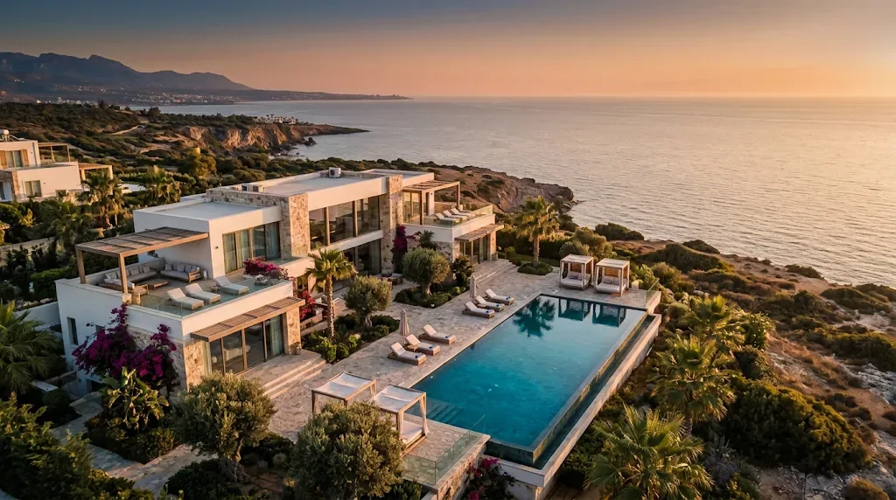

https://adavira.com/blog/kibris-ta-milyonluk-villalar-neden-ilanlarda-aylarca-bekliyor · 2026-11-12T18:32:50+00:00
Kıbrıs'ta lüks villalar neden satılmıyor? Yabancı alıcıyı çeken profesyonel drone ve mimari video çekimleriyle portföyünüzün satış hızını hemen artırın.

Girne’nin yamaçlarında deniz manzaralı, özel havuzlu ve birinci sınıf malzeme kalitesine sahip 850.000 £ değerinde bir villa düşünün. Lokasyon kusursuz, tapu hazır, fiyat bölge ortalamasında mantıklı. Ancak portföy yerel ilan sitelerine düştükten sonra aylar geçiyor; ne ciddi bir teklif geliyor ne de İngiltere ya da Avrupa’dan beklenen o nitelikli yabancı alıcı arıyor.
Sorun fiyatta mı, yoksa adanın emlak piyasasında mı? Çoğu zaman ikisinde de değil.
Sorun, o villanın alıcı karşısına çıktığı ilk 3 saniyede gizli: Ters ışıkta cep telefonuyla çekilmiş, tavanı basık gösteren geniş açı bozulmaları, kapalı perdeler ve parselin denizle olan gerçek bağını hissettiremeyen 10-15 adet sıradan fotoğraf.
Kuzey Kıbrıs gayrimenkul pazarı son yıllarda yerel bir pazar olmaktan tamamen çıktı. Karşımızda Londra’daki dairesinde, Berlin’deki ofisinde ya da İskandinavya’da oturup ada genelinde yatırım arayan bir alıcı kitlesi var. Bu kitle uçağa binip adaya gelmeden önce elemesini ekranda yapıyor. Ve ekranda gördüğü ilk şey metrekare bilgisi değil, mülkün ona hissettirdiği yaşam standardı.
Lüks segmentte gayrimenkul pazarlarken sadece oda sayısını listelemek yetersiz kalır. Alıcı; sabah terasta otururken göreceği manzarayı, havuzun gün batımındaki ışığını ve evin Akdeniz dokusu içindeki bağımsız konumunu hissetmek ister.
Telefon kamerasıyla ya da yanlış lenslerle çekilen fotoğraflarda en sık karşılaşılan hatalar şunlardır:
İşte tam bu noktada, ada dinamiklerine hakim Kıbrıs Emlak sektörü için iç/dış ve havadan Drone Çekimleri, mülkün gerçek değerini kanıtlayan en somut araca dönüşür. Havadan yapılan dengeli bir çekim, villayı sadece bir bina olmaktan çıkarıp bölgenin en seçkin parseli olarak vitrine koyar.
Uluslararası emlak verileri, profesyonel video turu ve mimari çekimi olan ilanların, sadece fotoğraf içeren ilanlara kıyasla %400 daha fazla organik etkileşim aldığını ve karar alma süresini neredeyse yarı yarıya kısalttığını gösteriyor.
Bir portföyü premium seviyeye taşıyan çekim unsurları:
Bu standartları sağlamak için standart bir emlakçı çekimi değil; doğrudan sahaya, ışığa ve mimariye odaklanan bir profesyonel video ve drone prodüksiyonu gerekir. Yatırımcı, ekranda izlediği 60 saniyelik bir video sayesinde o villanın içinde yürüdüğünü hayal edebilmelidir.
Bir portföyün ilanına ne kadar özen gösterirseniz, mülk sahibine ve alıcıya verdiğiniz güven o kadar artar. Yüksek komisyon potansiyeli taşıyan bir villayı ilan sitelerine 5 dakikada yüklenmiş amatör fotoğraflarla koymak, alıcının zihninde "Burada bir sorun olabilir mi?" ya da "Fiyatı çok düşürebilirim" algısı yaratır.
Özenle hazırlanmış bir görsel sunum ise pazarlık payını daraltır, mülkün prestijini korur ve portföyü rakiplerinin arasından çekip vitrinin en tepesine yerleştirir.
Eğer siz de portföylerinizin ilanlarda gereksiz yere beklemesini istemiyor, adanın seçkin projelerini gerçek değerinde ve doğru kitleyle buluşturmayı hedefliyorsanız, görsel stratejinizi baştan ele almanın tam zamanı.
Mevcut portföyünüzün dijital vitrini yabancı yatırımcıyı çekmek için yeterli mi?
Portföylerinizi birlikte inceleyelim, eksikleri belirleyelim ve satış hızını artıralım.
👉 Ücretsiz Gayrimenkul Analizi İsteyin